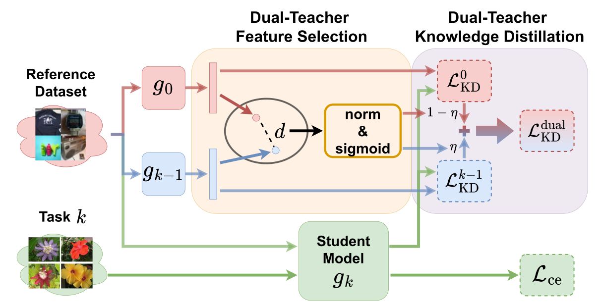
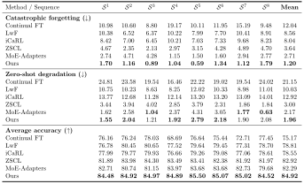

Select and Distill:
Selective Dual-Teacher Knowledge Transfer for
Continual Learning on Vision-Language Models
European Conference on Computer Vision (ECCV) 2024
1 National Taiwan University
2 NVIDIA
 Paper
Paper Code
CodeAbstract

Large-scale vision-language models (VLMs) have shown a strong zero-shot generalization capability on unseen-domain data. However, adapting pre-trained VLMs to a sequence of downstream tasks often leads to the forgetting of previously learned knowledge and a reduction in zero-shot classification performance. To tackle this problem, we propose a unique Selective Dual-Teacher Knowledge Transfer framework that leverages the most recent fine-tuned and the original pre-trained VLMs as dual teachers to preserve the previously learned knowledge and zero-shot capabilities, respectively. With only access to an unlabeled reference dataset, our proposed framework performs a selective knowledge distillation mechanism by measuring the feature discrepancy from the dual-teacher VLMs. Consequently, our selective dual-teacher knowledge distillation mitigates catastrophic forgetting of previously learned knowledge while preserving the zero-shot capabilities of pre-trained VLMs. Extensive experiments on benchmark datasets demonstrate that our framework is favorable against state-of-the-art continual learning approaches for preventing catastrophic forgetting and zero-shot degradation.
Evaluation of Our Proposed Framework
Take adventage from dual-teacher VLMs, our proposed framework, Selective Dual-Teacher Knowledge Transfer (S&D), successfully prevents catastrophic forgetting on previously learned datasets and preserves the original zero-shot capability for unseen data.
Method
The overall architecture of our proposed Selective Dual-Teacher Knowledge Transfer (S&D) framework. We propose a teacher selection mechanism based on the dual-teacher discrepancy. If a sampled reference image aligns with the distribution of previous datasets, the feature derived by the gk-1 would differ from that obtained by the pre-trained VLM g0, inducing large dual teacher discrepancy. On the other hand, if a reference image is out of previous data distribution, a smaller discrepancy would be expected since this reference image is unfamiliar to both teacher models, so that such unseen-domain data can be leveraged to facilitate zero-shot preservation.
Quatitative Results on
Multi-Domain Task-Incremental Learning

we present the quantitative comparisons with different methods on the MTIL benchmark. The results demonstrate that our method outperforms SOTA CL approaches, showing the effectiveness of our proposed method. By leveraging dual teachers with the proposed teacher selective mechanism, our framework is capable of alleviating catastrophic forgetting on all training sequences with less than 2% of performance degradation. In addition, the zero-shot classification capability can be properly preserved by our proposed learning framework.
Quantitative Results on
Multi-Domain Class-Incremental Learning
We further consider a more challenging scenario, Multi-Domain Class-Incremental Learning (MCIL), where the task (data domain) to be evaluated is not known during inference. To realize this, we conduct a unified label space by merging label spaces from all datasets at the inference stage. As we can observe, while there is a slight performance drop for all methods, our method consistently surpasses the other SOTA approaches, with about 1 ~ 3% improvement for almost all metrics across different sequences. From the above results, we successfully confirm the effectiveness and robustness of our proposed method in the more challenging class-incremental setting.
Bibtex
@article{yu2024select, title={Select and Distill: Selective Dual-Teacher Knowledge Transfer for Continual Learning on Vision-Language Models}, author={Yu, Yu-Chu and Huang, Chi-Pin and Chen, Jr-Jen and Chang, Kai-Po and Lai, Yung-Hsuan and Yang, Fu-En and Wang, Yu-Chiang Frank}, journal={arXiv preprint arXiv:2403.09296}, year={2024} }